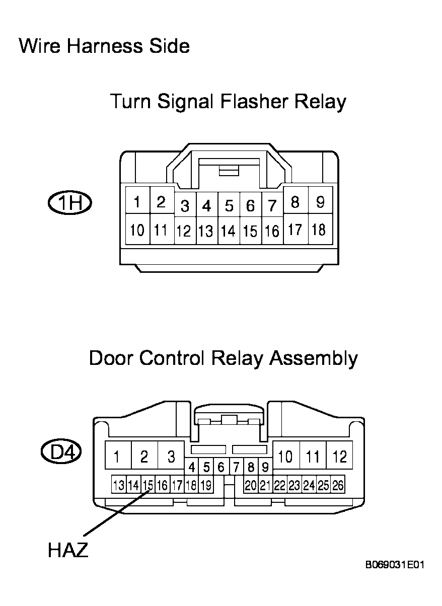
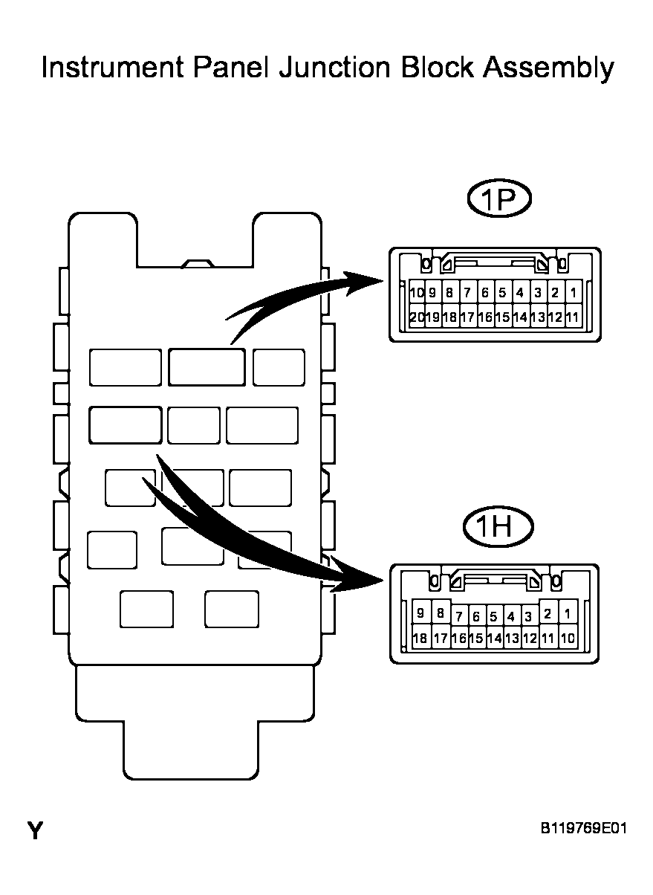

Inspection Procedure
- CHECK WIRELESS DOOR LOCK FUNCTIONS
- Check whether the wireless door lock functions operate by operating the transmitter switch.
HINT:
When the wireless door LOCK / UNLOCK operation can be performed, it means that the wireless signal from the transmitter is properly input to the door control relay. Door Control Relay Assembly
NG : Go to ONLY WIRELESS CONTROL FUNCTION DOES NOT OPERATE
OK : Go to Next Step
- Check whether the wireless door lock functions operate by operating the transmitter switch.
- CHECK HAZARD WARNING LIGHT
- Check that the hazard warning lights blink when the hazard warning signal switch is pressed.
NG : Go to LIGHTING SYSTEM
OK : Go to Next Step
- CHECK WIRE HARNESS (TURN SIGNAL FLASHER RELAY - DOOR CONTROL RELAY)
- Disconnect the 1H junction block connector.
- Disconnect the D4 relay connector.
- Measure the resistance of the wire harness side connectors.
Standard resistance

Courtesy of © TOYOTA, LICENSE AGREEMENT TMS1002TESTER CONNECTION SPECIFIED CONDITIONTester Connection Specified Condition 1H-1 -D4-15 (HAZ) Below 1 Ω
NG : REPAIR OR REPLACE HARNESS AND CONNECTOR
OK : Go to Next Step
- INSPECT INSTRUMENT PANEL JUNCTION BLOCK (TURN SIGNAL FLASHER RELAY)
- Disconnect the 1H and 1P junction block connectors.
- Measure the resistance of the junction block terminals.
Standard resistance

Courtesy of © TOYOTA, LICENSE AGREEMENT TMS1002TESTER CONNECTION SPECIFIED CONDITIONTester Connection Specified Condition 1H-1 - 1P-9 Below 1 Ω
NG : REPLACE INSTRUMENT PANEL JUNCTION BLOCK
OK : REPLACE DOOR CONTROL RELAY ASSEMBLY